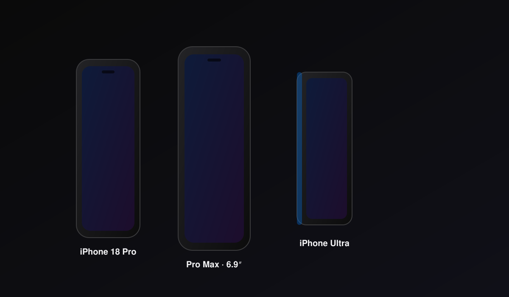
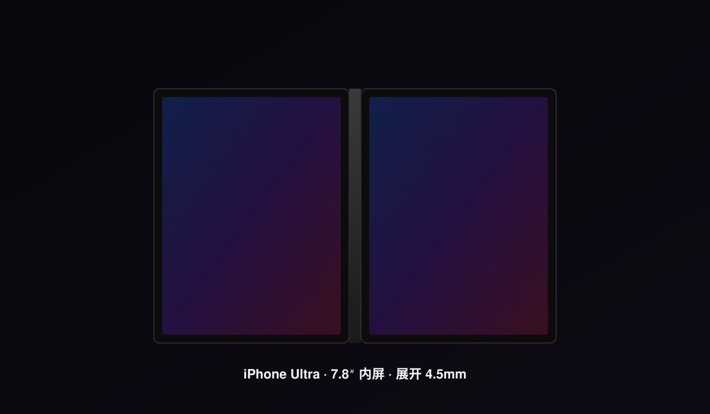
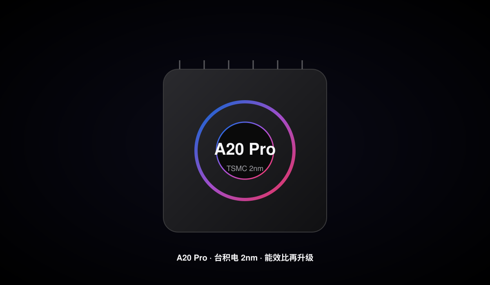
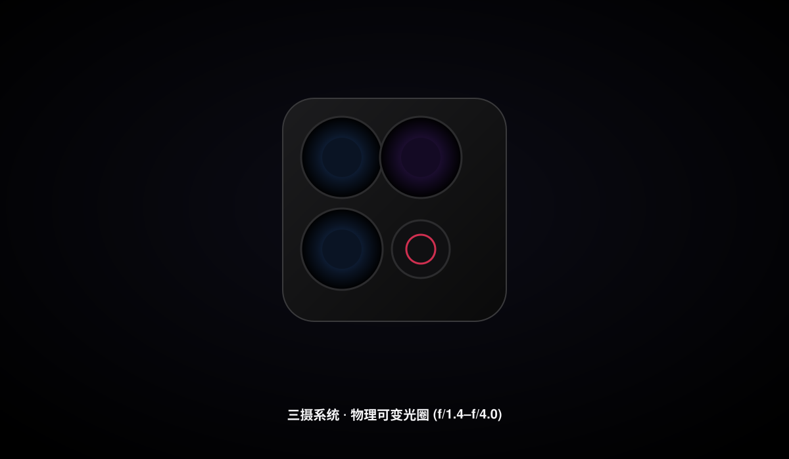
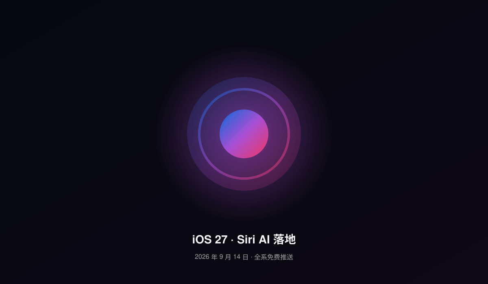
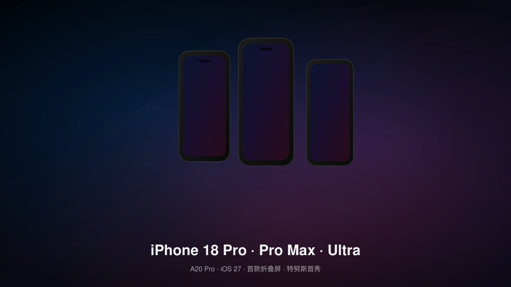

Apple Park, Cupertino · 2026 年 9 月 9 日
iPhone 18 Pro 系列
& iPhone Ultra
特努斯接任 CEO 后的首场秋季主题演讲 · 苹果首次分两波发布 · 旗舰 Pro/Pro Max 与首款折叠屏 Ultra 同台亮相，标准版推迟至 2027 春
已发布 · 9 月 12 日预购 · 9 月 18 日开售
A20 Pro · 台积电 2nm
iOS 27 出厂预装
7.8″ 折叠内屏
首款折叠 iPhone
核心结论
两波发布策略，把折叠屏推上超高端
2026 秋季只发 Pro / Pro Max + 折叠 Ultra；标准 iPhone 18、iPhone 18e、iPhone Air 2 推迟到 2027 春，平滑收入节奏的同时让 Ultra 独占折叠新形态定价层
Pro 起售价
$1,299
Pro Max 约 $1,399 起；国行 Pro 9999 元 / Pro Max 10999 元起
Ultra 起售价
$2,000+
史上最贵 iPhone；国行 14999 元起，顶配破 2 万
折叠内屏
7.8″
4:3 比例，展开仅 4.5mm，接近 iPad mini 体验
核心芯片
A20 Pro
台积电 2nm（N2），12GB RAM，自研 C2 基带
关键节点
9·18
9/9 发布 → 9/12 预购 → 9/18 开售 + iOS 27 同步推送
01
DESIGN
设计语言：延续与颠覆并存
本届发布会呈现出两种截然不同的产品哲学——Pro 系列是稳扎稳打的「精修」，而 iPhone Ultra 则是苹果第一次把折叠形态摆上舞台中央。一个守成，一个破局。
01
iPhone 18 Pro
Pro Max
Pro 系列：熟悉的轮廓，更克制的进化

iPhone 18 Pro（6.3″）与 Pro Max（6.9″）：钛金属机身 + 更小的灵动岛
Pro 系列延续了上一代的整体轮廓，肉眼可见的变化集中在三点：
- 尺寸不变：Pro 6.3″、Pro Max 6.9″，依旧钛金属中框平衡强度与散热；
- 灵动岛缩小：Face ID 元件进一步压缩，正面可用显示区域更完整；
- 新配色：市场传闻新增深樱桃红、深蓝等钛金属新色，呼应「静奢」取向。
02
iPhone Ultra
折叠屏
Ultra：苹果的第一台折叠，也是第一台「做减法」的 iPhone

形态突破
iPhone Ultra 横向书本式折叠：7.8″ 内屏 + 5.5″ 外屏，展开 4.5mm
Ultra 采用横向书本式折叠，外屏 5.5″、内屏 7.8″（接近 4:3），展开厚度仅约 4.5mm。为追求极致轻薄，苹果做出了一系列激进取舍：
- 取消 Face ID：改用侧边电源键集成 Touch ID——这是高端 iPhone 多年来首次回归指纹；
- 后置仅双摄：48MP 主摄 + 48MP 超广角，无独立长焦；
- 取消 MagSafe 与 Action Button，内屏/外屏各一枚前摄；
- 双电池设计：合计约 4883mAh，无均热板，高负载存在降频风险。
第一代风险
铰链寿命、折痕控制、软件适配——这些折叠屏行业老大难，苹果第一次做同样逃不掉。Ultra 砍掉了 Face ID、长焦、均热板，配置反而不如万元级 Pro Max。追求稳定体验的用户，Pro Max 仍是更理性的主力机选择。
02
PERFORMANCE
A20 Pro：2nm 的能效红利
三款新机均搭载台积电 2nm（N2）工艺的 A20 Pro 芯片，并配备 12GB RAM 以支撑更复杂的端侧 AI。这是苹果首次在旗舰全线用上 2nm。
01
A20 Pro · N2
同功耗性能 +18%，同性能功耗 -30%

A20 Pro：台积电 2nm 工艺，C2 自研基带，12GB RAM 起步
据供应链与分析师数据，A20 Pro 相较上代带来显著能效改进：
- 性能提升约 15–18%，同等功耗下；
- 功耗降低 25–30%，同等性能下；
- 自研 C2 基带：替代高通方案，信号与能效进一步可控；
- 12GB RAM 全线化：为 Siri AI 的屏幕感知与跨 App 编排提供内存基础。
02
电池
三档电池：从 4288mAh 到 5567mAh
| 机型 | 电池容量 | 备注 |
|---|
| iPhone 18 Pro | 4,288 mAh | 较上代小幅提升 |
| iPhone 18 Pro Max | 5,567 mAh | 最大容量，2nm + 大电池续航可期 |
| iPhone Ultra | ≈ 4,883 mAh | 双电池合计；无均热板，高负载或降频 |
续航提示
Ultra 的双电池方案与无均热板设计，意味着重度游戏/影像场景下的持续性能输出存在不确定性。第一代折叠，建议等首批实测续航与发热数据再决定是否入手。
03
CAMERA
影像：物理可变光圈回归专业
Pro 系列维持三摄系统，最大亮点是 Pro Max 独占的物理可变光圈；Ultra 则在影像上做了明显让步。
01
三摄系统
可变光圈
三颗 48MP + Pro Max 独占可变光圈

Pro 系列三摄 + Pro Max 独占物理可变光圈（f/1.4–f/4.0，十档调节）
Pro 与 Pro Max 均配备三颗 48MP 后置镜头，Pro Max 进一步独占：
- 物理可变光圈主摄：支持 f/1.4 至 f/4.0 十档调节，弱光与景深可控；
- 更高解析度超广角与长焦：Pro Max 长焦规格进一步拉大与 Pro 差距；
- 24MP 前摄：自拍与视频通话细节更扎实。
02
Ultra 影像取舍
Ultra：48MP 双摄，够用但不追求极致
为轻薄让步，Ultra 的影像系统明显精简：48MP 主摄 + 48MP 超广角双摄组合，无长焦镜头。对于日常记录与社交分享足够，但无法与 Pro Max 的长焦与可变光圈较量。
04
iOS 27 & SIRI AI
iOS 27：随新机一同到来
iPhone 18 系列出厂预装 iOS 27。正式版于 2026 年 9 月 14 日向 iPhone 11 及后续全系免费推送，Siri AI 成为本届系统的最大变量。
iOS 27 · Siri AI
01
AI · 系统级
Siri AI 落地：独立 App + 相机视觉

9/14 推送
iOS 27：Siri AI App、相机 Siri 模式、Liquid Glass 滑块，9 月 14 日全系免费推送
iOS 27 把重构后的 Siri AI 摆上系统中心：
- Siri App：专属应用汇聚对话，iCloud 跨设备续接；
- 相机 Siri 模式：对准即搜，按快门后 Siri 可见你所见；
- Liquid Glass 透明度滑块：从超清到全着色自由调节；
- 照片增强：Spatial Reframing、Extend 扩边、Clean Up 去物更自然；
- AirPods 自定义 EQ + Safari 标签页主题 + Notify Me 页面变更追踪。
区域限制
Siri AI 英文先发，中国大陆与欧盟暂不提供（需等待监管推进）。Messages Suggestions 与 Passwords 弱密码自动更新也标注为「后续软件更新」补上。国内用户可先享受性能、设计、照片与 Safari 等升级。

iPhone 18 Pro / Pro Max / Ultra 三机登场（概念渲染）
A20 Pro 芯片：台积电 2nm 工艺核心
Pro 系列方形三摄模组 + 可变光圈
iPhone Ultra 展开：7.8″ 内屏的 iPad 级体验
两波发布：折叠屏独占超高端
苹果用「9 月只发 Pro + Ultra、标准版推迟到 2027 春」的策略，让首款折叠 iPhone 独占新形态定价层（14999 元起），同时避免与走量机型抢 spotlight。
Ultra 是「做减法」的折叠
取消 Face ID（改侧边 Touch ID）、无长焦、无 MagSafe、无均热板——第一代折叠把风险与成本都压在形态上。稳定党选 Pro Max，尝鲜党才考虑 Ultra。
2nm 能效是真正的底牌
A20 Pro 同性能功耗降 25–30%，对 4.5mm 的折叠 Ultra 与 5567mAh 的 Pro Max 都至关重要。芯片红利决定了这一代的实际体验上限。
对国内用户：硬件到位，Siri AI 待定
三款新机的硬件与 iOS 27 的性能/设计/照片升级国内可正常享用；但 Siri AI 因监管暂不提供。换机看硬件与影像即可，AI 价值需等后续落地。